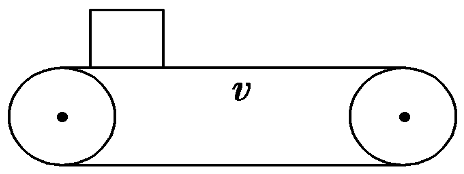
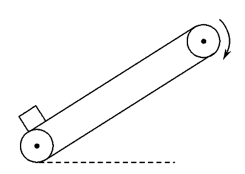

功能关系
| 各种力做功 | 对应能的变化 | 定量关系 |
|---|---|---|
| 重力做功 | 重力势能变化 | W_{G}=-\Delta E_{pG} |
| 弹力做功 | 弹性势能变化 | W_{弹}=-\Delta E_{p弹} |
| 合外力做功 | 动能变化 | W_{total}=\Delta E_{k} |
| 非重力和弹力做功 | 机械能变化 | W_{other}=\Delta E |
| 摩擦力做功 | ？ | ？ |
摩擦力作为外力和系统内力做功是不一样的。
光滑水平面放置一木板 A，木板上有一木块 B，两者之间的摩擦力为 f。给 B 一个初速度，A、B 运动到共速经过的路程分别为 l_{A} 和 l_{B}。解决下列问题：
- 摩擦力对 A 做的功？
- 摩擦力对 B 做的功？
- 前两问的结果分别对应什么能量的变化？
- 如果以 A、B 组成的系统为研究对象，求摩擦力对系统做的功。对应什么能量的变化。
第三问讲解：
物体间滑动摩擦力对物体系统做功等于内能的增加量，即
Q=fd
其中 d 是相对位移。
| 物体间滑动摩擦力对物体系统做功 | 物体系内能的变化 | fx_{相对}=Q |
练习
如图所示，电动机带动传送带以速度 v 匀速传动，一质量为 m 的小木块静止放在传送带上(传送带足够长)，若小木块与传送带之间的动摩擦因数为 \mu ，当小木块与传送带相对静止时，求：
- 小木块获得的动能；
- 摩擦过程产生的热量；
- 传送带克服摩擦力所做的功；
- 电动机额外输出的能量．

练习
如图所示，足够长的传送带以恒定速率顺时针运行，将一个物体轻轻放在传送带底端，第一阶段物体被加速到与传送带具有相同的速度，第二阶段与传送带相对静止，匀速运动到达传送带顶端。下列说法正确的是( C )
A. 第一阶段摩擦力对物体做正功，第二阶段摩擦力对物体不做功
B. 第一阶段摩擦力对物体做的功等于第一阶段物体动能的增加量
C. 第一阶段物体和传送带间因摩擦产生的热量等于第一阶段物体机械能的增加量
D. 物体从底端到顶端全过程机械能的增加量等于全过程物体与传送带间因摩擦产生的热量

练习
一个小物块从斜面底端冲上足够长的斜面后，返回到斜面底端，已知小物块冲上斜面的初动能为 E，小物块返回斜面底端时的动能 \frac{E}{2} 。若小物块冲上斜面的初动能变为 2E，求小物块返回斜面底端时的动能？
初动能为 E 的往返过程，摩擦力做功 W_{f} 满足
W_{f}=\frac{E}{2}-E\Rightarrow W_{f}=-\frac{E}{2}
两次往返过程摩擦力大小不变，摩擦力做功与路程成正比，W'_{f}=2W_{f}。初动能为 2E 时，返回底端的动能 E'=2 E-E=E